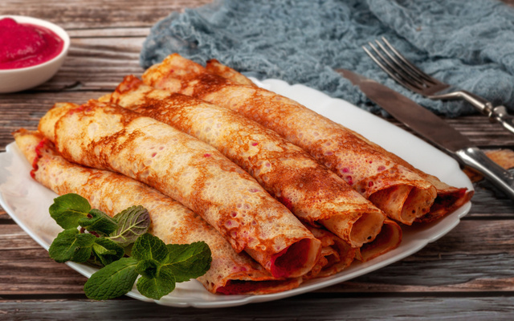
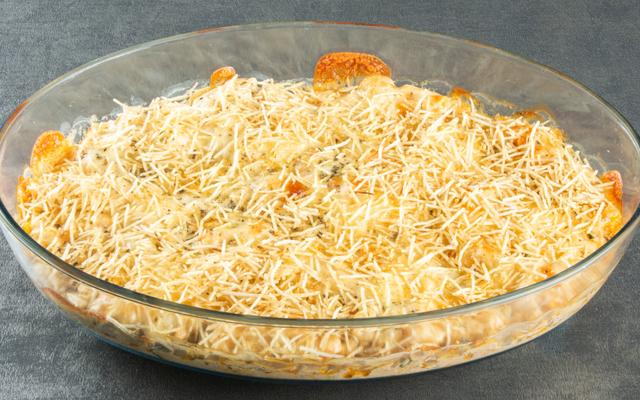

Receitas favoritas do Asafe
Panqueca
- 1 Ovo
- 1 Xícara de leite
- 1 Colher (sopa) de leite
- 1 Xícara de farinha de trigo
- 1 Pitada de sal
- Bata todos os ingredientes no liquidificador até obter uma consistência cremosa.
- Unte uma frigideira com óleo e despeje uma concha de massa.
- Faça movimentos circulares para que a massa se espalhe por toda a frigideira.
- Espere até a massa se soltar do fundo, vire e deixe fritar do outro lado.
- Acrescente o recheio de sua preferência, enrole e está pronta para servir.

Fricassê de Frango
- 1 lata de creme de leite
- 1 copo de requeijão cremoso
- 2 peitos de frango desfiados
- 100 g de batata palha
- 1 lata de milho verde e/ou ervilha se quiser
- 200 g de mussarela fatiada
- 1 xícara de água
- Bata no liquidificador o milho, o requeijão, o creme de leite e a água.
- Refogue o creme do liquidificador com o frango desfiado e o sal até ficar com uma textura espessa.
- Coloque o refogado numa assadeira, cubra com mussarela e espalhe a batata palha por cima.
- Leve ao forno até borbulhar.
- Sirva com arroz branco.
